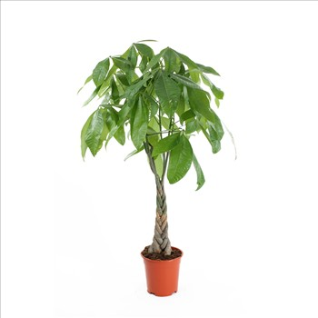

pachira aquatiqua
Pachira aquatica est une espèce d'arbres tropicaux des régions humides connu sous les noms vernaculaires de Marce, châtaignier de la Guyane, noisetier de la Guyane, noix de Malabar, cacaoyer-rivière, arbre à monnaie et pachirier aquatique.
En savoir plus
Zamiaculas
Zamioculcas zamiifolia est une espèce de plantes de la famille des Araceae ; c'est l'unique espèce du genre Zamioculcas.
En savoir plus
scindapsus d’intérieur
Le Scindapsus, plante grimpante ou cascade de feuilles panachées selon votre envie, est une plante facile à réussir, increvable par son bouturage au taux de réussite de 100%.
En savoir plus